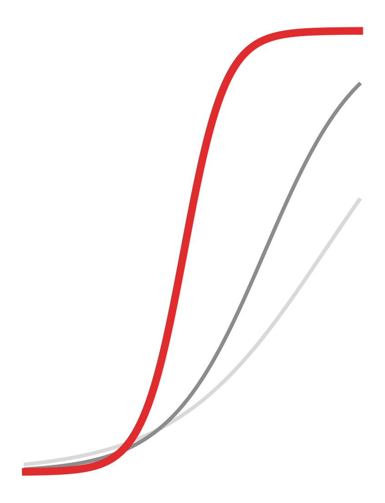
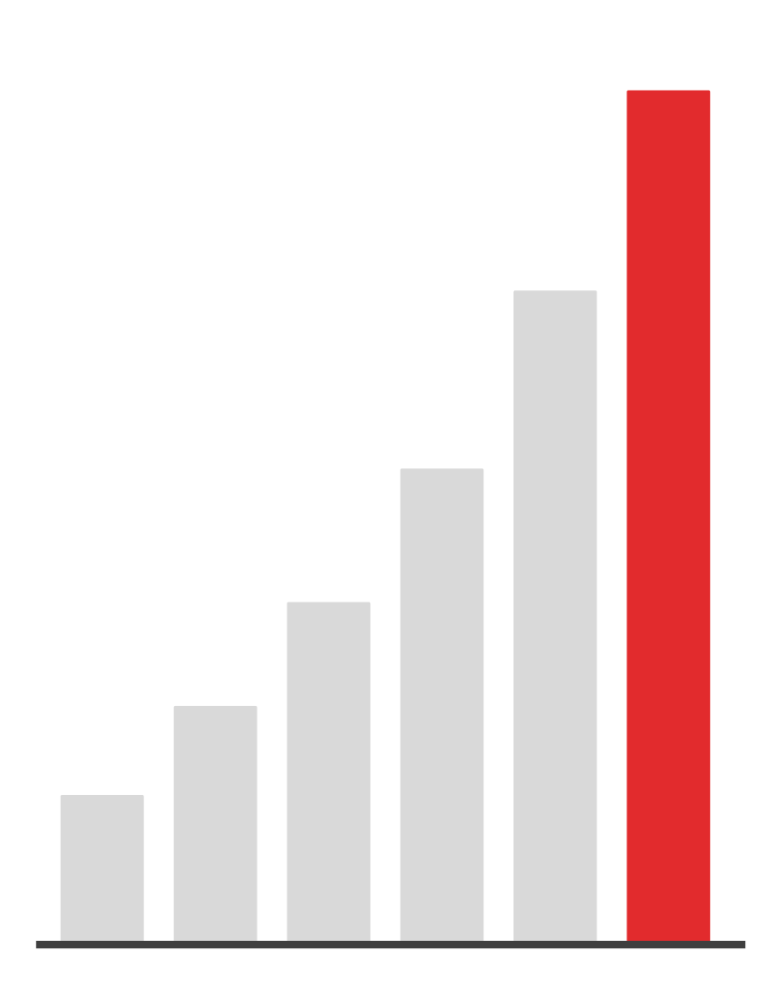

시간표 (3시간)
| 0:00–0:55 | 파트 1 · AI는 어디까지 왔나 |
| 0:55–1:05 | 휴식 |
| 1:05–2:00 | 파트 2 · 일하는 AI |
| 2:00–2:10 | 휴식 |
| 2:10–3:00 | 파트 3 · 돈·전기·규칙·일자리, 한국 |
파트마다 마지막 5분은 웹 퀴즈와 질의응답
직장인을 위한 3시간 교육 발표. 2026년 AI의 큰 흐름, 주요 뉴스, 논문을 비전공자 눈높이로 정리했습니다. 기준일 2026년 11월 14일.
| 0:00–0:55 | 파트 1 · AI는 어디까지 왔나 |
| 0:55–1:05 | 휴식 |
| 1:05–2:00 | 파트 2 · 일하는 AI |
| 2:00–2:10 | 휴식 |
| 2:10–3:00 | 파트 3 · 돈·전기·규칙·일자리, 한국 |
파트마다 마지막 5분은 웹 퀴즈와 질의응답
| [공식] | 공식 보고서·기관·학회·법령 |
| [보도] | 주요 언론·업계 보도 |
| [주장] | 기업 발표, 독립 검증 전 |
| [추적] | 2차 집계, 출처끼리 엇갈림 |
| ← → · F · N | 이동 · 전체 화면 · 발표자 노트 |


파트 2 · 1:05–2:00
챗봇에서 에이전트로 · AI가 혼자 일하는 시간 · 에이전트의 그림자와 권한 · 피지컬 AI와 과학 AI

파트 3 · 2:10–3:00
쏟아지는 돈과 거품 논쟁 · 전기와 칩: 삼중 병목 · 규칙이 생기다 · 일자리와 배움